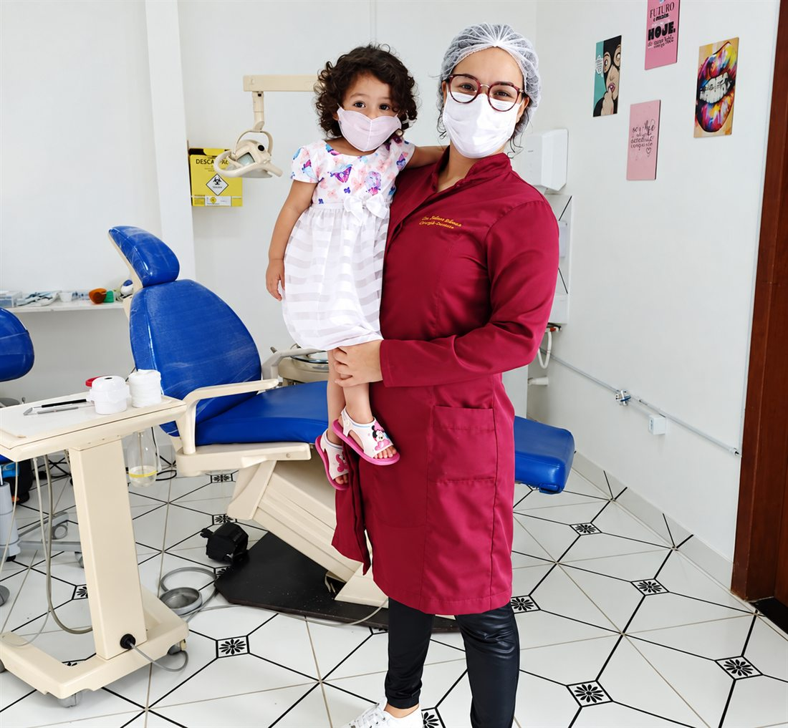
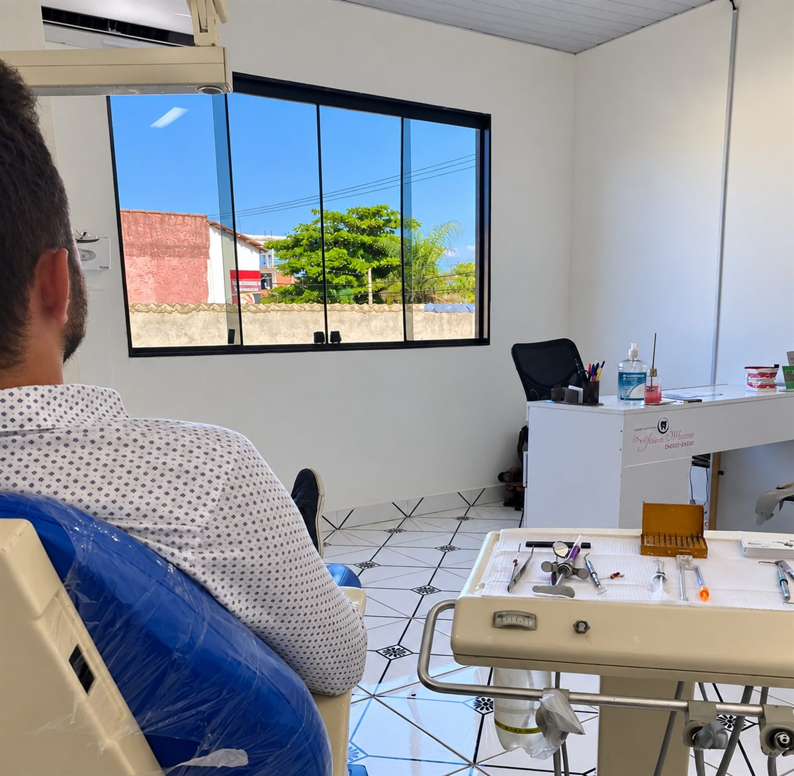

01
Cirurgia
Extrações, sisos inclusos e procedimentos cirúrgicos realizados com planejamento prévio e orientação completa de pós-operatório.
Falar sobre isso →Jacaraípe · Serra — ES
Odontologia com diagnóstico cuidadoso e plano de tratamento explicado passo a passo — de uma dor que precisa resolver hoje à reabilitação completa do seu sorriso.

Responsável Técnica · Dra. Jessica Moreira
CRO 8271 ES
EPAO 2513
Atendemos aos domingos
Cada caso começa por uma avaliação clínica. A partir dela, você recebe as opções possíveis, o que cada uma envolve e o tempo de tratamento — sem pressa e sem termo técnico que ninguém entende.
01
Extrações, sisos inclusos e procedimentos cirúrgicos realizados com planejamento prévio e orientação completa de pós-operatório.
Falar sobre isso →02
Clareamento, restaurações e facetas para harmonizar cor, forma e proporção — respeitando o que é natural no seu rosto.
Falar sobre isso →03
Próteses fixas e removíveis para devolver mastigação, fala e conforto, com ajuste fino até que você esqueça que está usando.
Falar sobre isso →04
Reposição de dentes perdidos com planejamento por imagem, avaliação óssea e acompanhamento em todas as fases.
Falar sobre isso →05
Investigação e manejo de dor de dente, sensibilidade e desconforto na articulação da mandíbula (DTM) — tratando a causa, não só o sintoma.
Falar sobre isso →Descreva o que está sentindo. A avaliação existe justamente para definir o caminho junto com você.
Me avaliar →
Sou a Dra. Jessica Moreira, cirurgiã-dentista e responsável técnica deste consultório, em Jacaraípe. Atuo em cirurgia, estética dental, próteses, implantes e no tratamento da dor.
Ninguém deveria sair do consultório sem entender o que foi feito e por quê. Por isso cada plano de tratamento é apresentado com alternativas, etapas e prazos claros, para que a decisão seja realmente sua — de uma consulta da criança à reabilitação completa de quem já perdeu dentes.
Dra. Jessica Moreira · CRO 8271 ES · EPAO-2513
Do primeiro contato ao início do tratamento, em três etapas.
Conta o que está sentindo ou o que gostaria de mudar. A partir disso combinamos o melhor horário.
Exame completo e, quando necessário, exames de imagem para entender a situação real de cada dente.
Você recebe as opções, o que cada uma envolve e as condições. Só começamos quando estiver claro para você.
Casos de dor têm prioridade na agenda. Mande uma mensagem descrevendo o que está sentindo e desde quando, que retornamos com o horário disponível mais próximo.
Sim. Domingo o consultório funciona das 09h às 18h — uma alternativa para quem não consegue faltar ao trabalho durante a semana. O único dia fechado é o sábado.
É uma avaliação: conversamos sobre seu histórico, examinamos sua boca e, se necessário, solicitamos exames de imagem. Ao final você entende o que precisa ser feito e quais são as opções.
Informe pelo WhatsApp qual é o seu convênio que confirmamos as condições de atendimento.
As condições são apresentadas junto com o plano de tratamento, de acordo com o procedimento indicado.
Depende da condição óssea, da saúde da gengiva e do número de dentes envolvidos. O prazo estimado é definido na avaliação, após os exames.
Agende sua avaliação pelo WhatsApp. É o caminho mais rápido para encontrar um horário.
Avenida Minas Gerais, 1026 — Jacaraípe
Serra — ES · CEP 29175-608
| Domingo | 09:00 — 18:00 |
|---|---|
| Segunda-feira | 09:00 — 18:00 |
| Terça-feira | 14:30 — 18:00 |
| Quarta-feira | 14:30 — 18:00 |
| Quinta-feira | 10:30 — 18:00 |
| Sexta-feira | 10:30 — 18:00 |
| Sábado | Fechado |